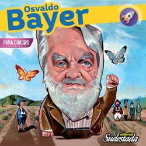

Buscar
Osvaldo Bayer para chic@s
"Hay personas que luchan un día y son buenos. Hay otras que luchan un año y son mejores. Hay quienes luchan muchos años, y son muy buenas. Pero están las que luchan toda la vida; esas son las imprescindibles", dice un pensador llamado Bertolt Brecht. Precisamente, esta nueva entrega de la colección Aventurer@s trata de uno de los imprescindibles, de uno de esos que no tienen que faltar. Osvaldo Bayer es de esas personas que con su trabajo de periodista y escritor, con sus libros, sus películas y, sobre todo, con su misma vida se convierten en referentes, como un faro que aún en la más oscura de las noches, nos muestra un camino justo, honesto y fraterno.
Edición Especial N° 22
Osvaldo Bayer para chic@s
Colección para chic@s
Comprar edición impresaSumario
Compartir Articulo
"Hay personas que luchan un día y son buenos. Hay otras que luchan un año y son mejores. Hay quienes luchan muchos años, y son muy buenas. Pero están las que luchan toda la vida; esas son las imprescindibles", dice un pensador llamado Bertolt Brecht. Precisamente, esta nueva entrega de la colección Aventurer@s trata de uno de los imprescindibles, de uno de esos que no tienen que faltar. Osvaldo Bayer es de esas personas que con su trabajo de periodista y escritor, con sus libros, sus películas y, sobre todo, con su misma vida se convierten en referentes, como un faro que aún en la más oscura de las noches, nos muestra un camino justo, honesto y fraterno.
Osvaldo es una persona brillante como pocas, generoso como ninguno, con la valentía de los que siempre van al frente y la humildad de aquellos grandes que dejan una huella cálida y luminosa en nuestras vidas. Sin embargo, por decir lo que piensa y pensar lo que hace, por defender a los trabajadores e investigar esos crímenes que nunca tuvieron castigo, fue encarcelado, amenazado y, durante la dictadura militar de 1976, tuvo que exiliarse con su familia. En el exilio, este pacifista que siempre propuso "la paz eterna entre las personas", denunció sin descanso los crímenes y violaciones a los derechos humanos cometidos por las dictaduras latinoamericanas.
De regreso al país sigue hasta hoy trabajando por una Patria Grande y Justa, por esa Patria inclusiva que soñaron los protagonistas de la Revolución de Mayo. Por todas estas razones, te invitamos a conocer juntos la historia de este gran aventurero llamado Osvaldo Bayer.
Pedidos por mensaje privado o a sudestadarevista@yahoo.com.ar
Envíos a todo el país
Conocé más de la colección infantil en:
http://www.revistasudestada.com.ar/coleccion/5/coleccion-para-chicos/
Con respecto al dinero, nos manejamos con depósito/transferencia, Tarjeta o Rapipago
Ni bien recibimos una copia del comprobante de transferencia (o foto de celular) y tu dirección postal completa, hacemos el envío por correo argentino certificado que tarda aproximadamente 4 días en llegar.
Revista Cultural Sudestada
www.revistasudestada.com.ar
Seguinos en Instagram: https://www.instagram.com/sudestadarevista/
y en Twitter: @RevSudestada
Comentarios
Marcelo Valko

Sudestada
El colectivo de Revista Sudestada esta integrado por Ignacio Portela, Hugo Montero, Walter Marini, Leandro Albani, Martín Latorraca, Pablo Fernández y Repo Bandini.
Articulos más vistos


LIBRERÍA SUDESTADA

Colección infantil

Distribuidora de Libros

Suscripción

Sudestada en URUGUAY